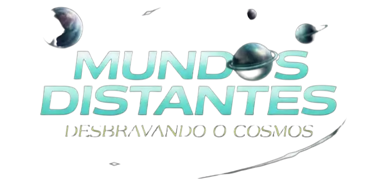

Durante grande parte da história humana, a Terra foi considerada o único lugar possível para a vida no Universo.
Hoje sabemos que planetas e luas são extremamente comuns, alguns deles estando relativamente próximos de nós.
Dentro do nosso Sistema Solar, descobrimos mundos surpreendentes: oceanos ocultos, fontes internas de energia e ambientes químicos complexos.
A descoberta de exoplanetas revolucionou completamente nossa compreensão sobre o Universo.
O objetivo não é afirmar que a vida existe nesses lugares, mas explorar uma das maiores perguntas da humanidade:
Estamos realmente sozinhos no Universo?
SISTEMA SOLAR ☀️
Mundos com água passada ou oceanos prováveis, mas com mais incertezas.
Mundos onde a habitabilidade é teoricamente possível, mas bastante incerta.
EXOPLANETAS 🌌
Exoplanetas com condições favoráveis para abrigar vida.
Exoplanetas com condições razoáveis para abrigar vida.
Exoplanetas que parecem promissores, mas ainda há poucos dados disponíveis.